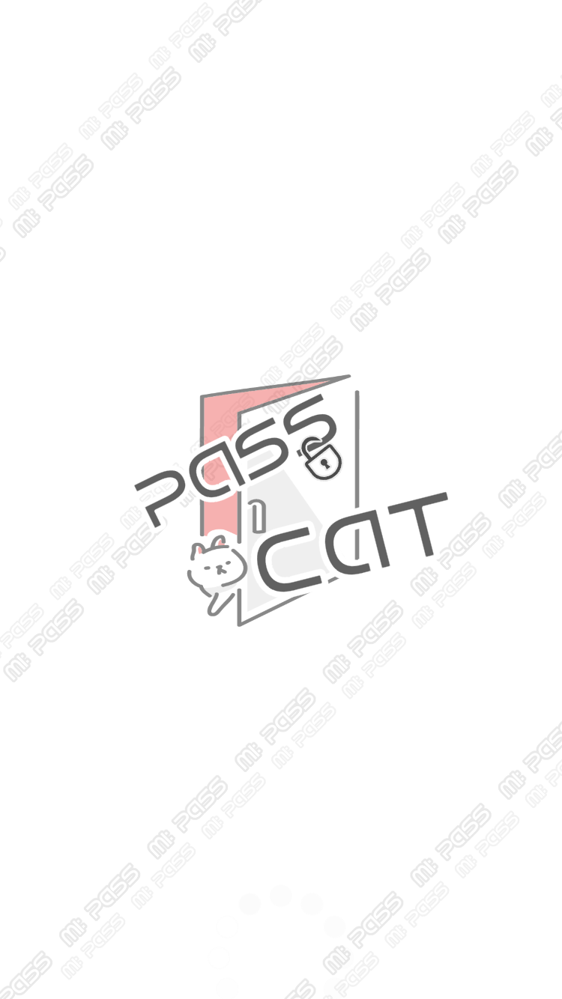
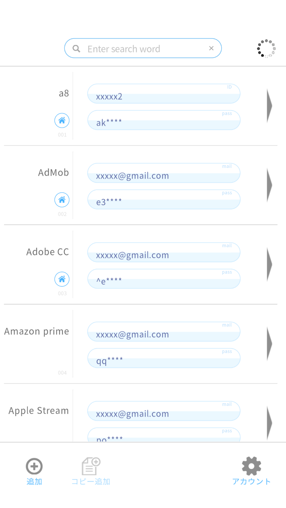
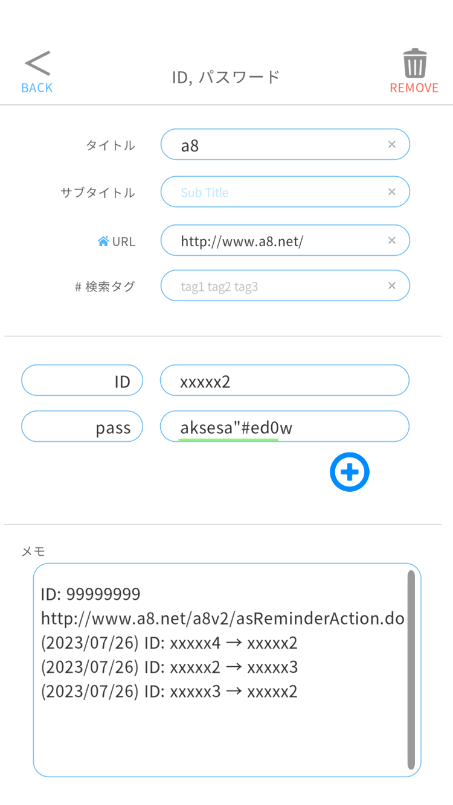
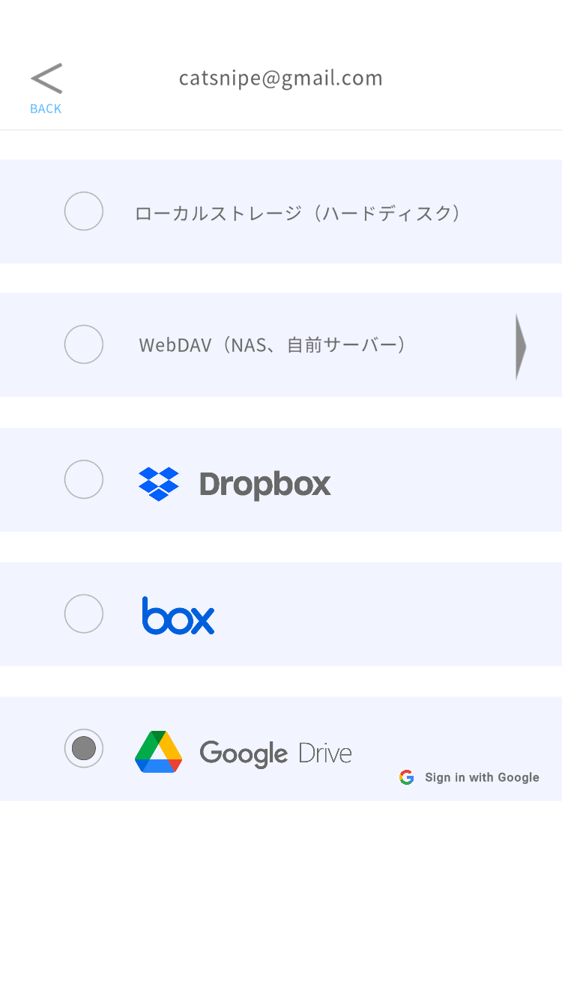
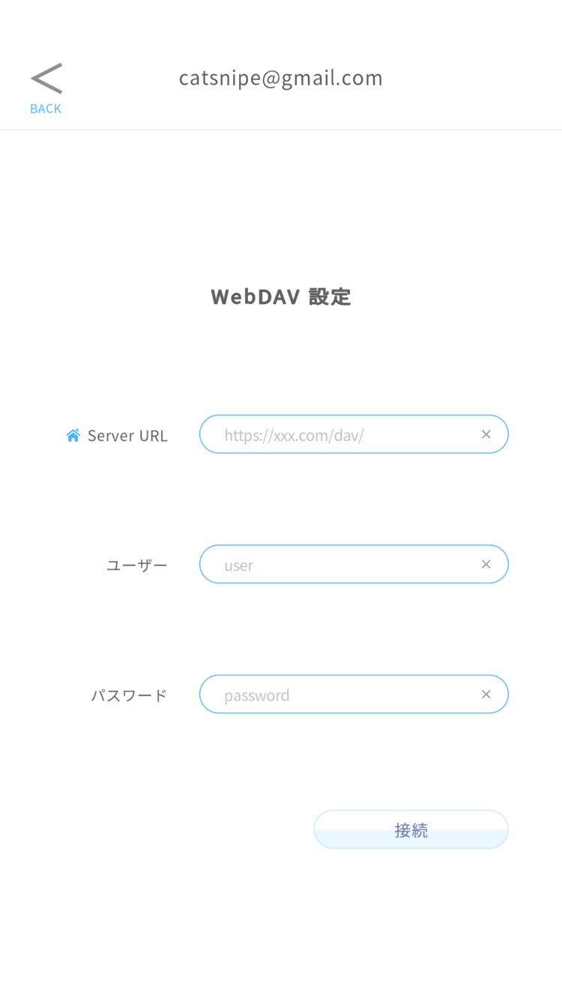
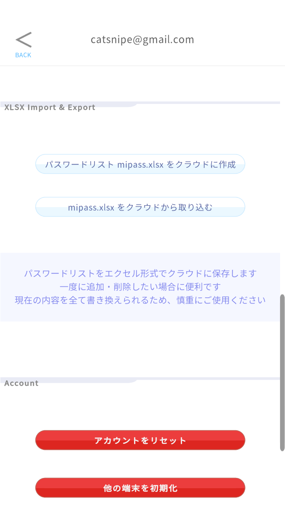

PassCat - ぱすねこ






PassCat は、パスワードを端末の中に暗号化して保存し、
必要なときにワンタップでコピーして使えるパスワード管理アプリです。
ご希望の場合のみ、ご自身のクラウド（Google Drive / Dropbox / Box / WebDAV）と
同期して、複数の端末で同じデータを使うことができます。
当方がパスワードをお預かりするサーバーはありません。
データはあなたの端末と、あなたが選んだあなた自身のクラウドにだけ保存されます。
Windows / Android / iOS 版公開中:
App Store ・
Google Play
PassCat を正しく使う手順
1. 初期設定
- メールアドレスを登録する
初回起動時にメールアドレスを入力すると、6 桁のワンタイムコードが届きます。
60 秒以内に入力して本人確認を完了してください。
- サインイン方式を選ぶ
次のいずれかを選択できます。
- メール認証 — 起動のたびにワンタイムコードで確認します。確実ですがひと手間かかります。
- オフラインパスワード — アプリ専用のマスターパスワードを設定します。ネット接続なしでサインインできます。
- 生体認証（Android / iOS）— 指紋・顔認証でサインインできます。
- 自動サインアウト時間を設定する
設定画面で 5 分〜12 時間の範囲で選べます。席を離れることが多い環境では短めをおすすめします。
重要: オフラインパスワードを忘れると、当方でも復元することはできません。
忘れない方法で管理してください。
2. パスワードを登録する
- 一覧画面の追加ボタンから入力画面を開きます。
- タイトル（サービス名など）と、必要に応じてサブタイトル・URL・タグを入力します。
- 項目欄には「名前と値」のペアを最大 5 つまで登録できます。
1 番目の項目にはユーザー名（アカウント名・メールアドレスなど）を、
2 番目以降にパスワードを入れるのがおすすめです。
一覧画面のボタン配置がこの並びを前提にしています。
- メモ欄には自由にメモを残せます。値を変更した際は変更履歴も記録されます。
3. パスワードを使う
- 一覧から目的のサービスを探します。タイトル・タグでの検索もできます。
- アカウントボタンをタップすると、ユーザー名がコピーされ、登録した URL が開きます。
- パスワードボタン（
****** とマスク表示されています）をタップすると、
パスワードがクリップボードにコピーされます。開いたログイン画面に貼り付けてください。
コピーしたパスワードはシステムのクリップボードに入ります。
貼り付けが終わったら、別の文字列をコピーするなどしてクリップボードを上書きしておくと、より安全です。
4. クラウド同期を設定する（任意）
- 設定画面から同期先を選びます: Google Drive / Dropbox / Box / WebDAV
- 選んだサービスのサインイン画面が開くので、ご自身のアカウントで認証してください。
- 以後、変更は自動的にクラウドへ保存されます。別の端末で同じメールアドレス・同じクラウドを設定すると、
データが自動でマージされ、どの端末でも同じ内容になります。
機能の詳細
暗号化保存
登録したデータは AES 暗号化を施したファイルとして端末内に保存されます。
クラウドへアップロードされるのも、この暗号化済みファイルだけです。
平文のパスワードがそのままネットワークに流れたり、クラウドに置かれたりすることはありません。
クラウド同期と複数端末の利用
同期はすべて「あなた自身のクラウドアカウント」に対して行われます。
複数の端末で編集した場合は、エントリごとに更新日時の新しい方が採用される形で自動的にマージされます。
また、家族などで同じクラウドアカウントを共有している場合でも、
保存ファイル名は PassCat の登録メールアドレスごとに分かれるため、互いのデータが混ざることはありません。
| 同期先 | アプリがアクセスできる範囲 |
|---|
| Google Drive | PassCat が作成したファイルのみ（drive.file スコープ） |
| Dropbox | 専用のアプリフォルダ（アプリ/PassCat/mipass）のみ |
| Box | ルート/mipass |
| WebDAV | 指定したサーバー URL 直下の mipass フォルダ |
Box をお使いの方へ: Box のみ、サービスの仕様上アプリに与えられる権限が
「アカウント全体のファイルの読み書き」になります。PassCat が実際に操作するのは自分の保存ファイルだけですが、
より狭い権限で使いたい場合は Google Drive または Dropbox をおすすめします。
WebDAV をお使いの方へ: 接続先は https のサーバーのみ利用できます。
Nextcloud などアプリパスワードを発行できるサーバーでは、アカウント本体のパスワードではなく
アプリパスワードの使用をおすすめします。
パスワード自動生成
入力画面の生成ボタンで、強いパスワードを自動生成できます。
ボタンを押すたびに「数字＋小文字」→「大文字入り」→「記号入り」と強度が切り替わります。
また、入力したパスワードの強度が 0〜100 で表示されるので、使い回しや弱いパスワードの見直しに役立ちます。
自動サインアウト
操作しない状態が設定時間（5 分〜12 時間）続くと、自動的にサインイン画面へ戻ります。
端末を開いたままにしてしまっても、パスワード一覧が表示され続けることはありません。
インポート / エクスポート（XLSX）
登録データを Excel 形式（XLSX）でエクスポートしたり、同じ形式のファイルから取り込んだりできます。
他のパスワード管理からの乗り換えや、バックアップの確認に利用できます。
注意: エクスポートされる XLSX は暗号化されていない平文です。
内容の確認・移行が済んだら、必ずファイルを削除してください。
登録件数
50 件まで登録できます。
安全にお使いいただくために
- オフラインパスワードは長く・推測されにくいものにし、絶対に忘れないでください。当方でも復元できません。
- データは端末内にも常に保存されています。クラウド障害時も端末内のデータから復旧できます。
- エクスポートした XLSX ファイルは平文です。取り扱いに十分注意してください。
- 端末自体の画面ロック（PIN・生体認証）も併用してください。
プライバシーポリシー
BirdRune トップへ
PassCat
PassCat is a password manager that stores your passwords
encrypted on your own device, ready to copy with a single tap.
Optionally, it can sync with your own cloud storage
(Google Drive / Dropbox / Box / WebDAV) so you can use the same data on multiple devices.
We do not operate any server that stores your passwords.
Your data lives only on your device and, if you choose, in your own cloud account.
Now available for Windows, Android and iOS:
App Store /
Google Play
Getting Started
1. Initial setup
- Register your email address.
On first launch, enter your email address; a 6-digit one-time code will be sent to you.
Enter it within 60 seconds to verify.
- Choose a sign-in method:
- Email verification — a one-time code on every launch. Reliable, slightly more effort.
- Offline password — a master password for this app. Works without a network connection.
- Biometric (Android / iOS) — sign in with fingerprint or face recognition.
- Set the auto sign-out timer (5 minutes to 12 hours) in Settings.
A shorter time is recommended if you often leave your device unattended.
Important: If you forget your offline password, we cannot recover it for you.
Keep it somewhere safe.
2. Adding entries
- Open the entry editor from the list screen.
- Enter a title (service name), and optionally a subtitle, URL and tags.
- Each entry holds up to 5 name/value fields.
We recommend putting your username in the first field and
passwords in the following fields — the list screen's buttons are laid out with this in mind.
- The memo field is free-form; a change history is recorded when you modify values.
3. Using entries
- Find the service in the list; you can search by title or tag.
- Tap the account button to copy your username and open the registered URL.
- Tap a password button (masked as
******) to copy the password
to the clipboard, then paste it into the login form.
Copied passwords go to the system clipboard. After pasting, consider copying
something else to overwrite the clipboard for extra safety.
4. Cloud sync (optional)
- In Settings, choose a sync provider: Google Drive / Dropbox / Box / WebDAV.
- Sign in with your own account when the provider's sign-in screen appears.
- Changes are saved to your cloud automatically. Set up the same email address and the same
cloud on another device, and your data merges automatically across devices.
Features in Detail
Encrypted storage
Your data is stored on the device as an AES-encrypted file, and only this encrypted file
is ever uploaded to your cloud. Plain-text passwords are never sent over the network
or stored in the cloud.
Cloud sync and multi-device use
Sync always targets your own cloud account. When you edit on multiple devices,
entries are merged automatically, keeping the most recently updated version of each entry.
Even if you share one cloud account with family members, each PassCat user's file is
kept separate per registered email address, so data never gets mixed up.
| Provider | What the app can access |
|---|
| Google Drive | Only files created by PassCat (drive.file scope) |
| Dropbox | Only a dedicated app folder (Apps/PassCat/mipass) |
| Box | The mipass folder at the root of your account |
| WebDAV | The mipass folder under the server URL you specify |
Note for Box users: Due to how Box works, the app is granted read/write
access to files across your account. PassCat only ever touches its own save file, but if you
prefer a narrower permission, we recommend Google Drive or Dropbox.
Note for WebDAV users: Only https servers are supported. If your server
can issue app passwords (e.g. Nextcloud), use an app password instead of your account password.
Password generator
Generate strong passwords in the entry editor. Each press of the generate button cycles the
strength: digits + lowercase → with uppercase → with symbols. A 0–100 strength meter is also
shown for any password you type, helping you spot weak or reused passwords.
Auto sign-out
After the configured idle time (5 minutes to 12 hours), the app returns to the sign-in
screen automatically, so your password list is never left on screen.
Import / Export (XLSX)
You can export your data as an Excel (XLSX) file and import from the same format —
useful for migrating from another password manager or reviewing a backup.
Caution: Exported XLSX files are unencrypted plain text.
Delete the file once you are done with it.
Entry limit
You can store up to 50 entries.
Staying Safe
- Choose a long, hard-to-guess offline password and never forget it — we cannot recover it.
- Your data is always kept on the device as well; you can recover from it even if your cloud is unavailable.
- Exported XLSX files are plain text — handle them with care.
- Also use your device's own screen lock (PIN / biometrics).
Privacy Policy
Back to BirdRune